Перше приземлення
Протягом століть людство вдивлялося у далеку червону цятку на нічному небі, ставлячи собі одне питання: "а що якби?". У 2034-му році ми отримали відповідь коли космічний корабель SpaceX торкнувся марсіанського грунту. Шлях до цього був драматичний. 115-метровий корабель виконав складний маневр перевороту за кілька секунд до контакту з поверхнею. Атмосфера Марса тонка і невблаганна, але двигуни вистояли хмари пилу над рівнинами Arcadia Planitia.
Коли гуркіт моторів нарешті пропав, 6 членів екіпажу залишили сліди своїх чобіт на ржавій планеті. Це були не просто пілоти та науковці, вони стали першими Марсіанами. Це не був короткий візит для прапора. Це був момент коли Марс перестав бути ціллю та став новою домівкою. Ця подія поклала кінець нашій земній самотності та відкрила еру мильтипланетарного майбутнього.
Галерея
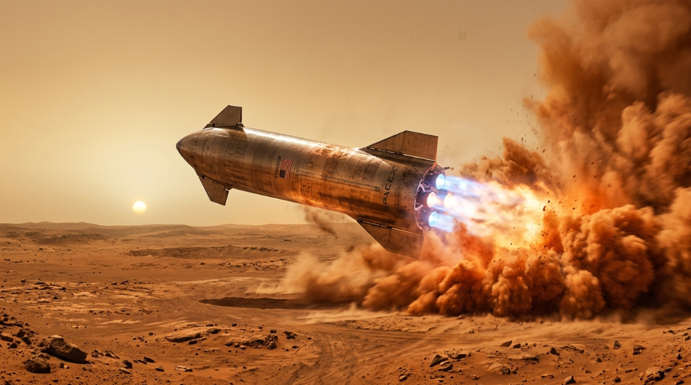
Остаточний спуск
120-метровий сталевий корабель що виконує маневр перевороту за секунди до приземлення на Марс.
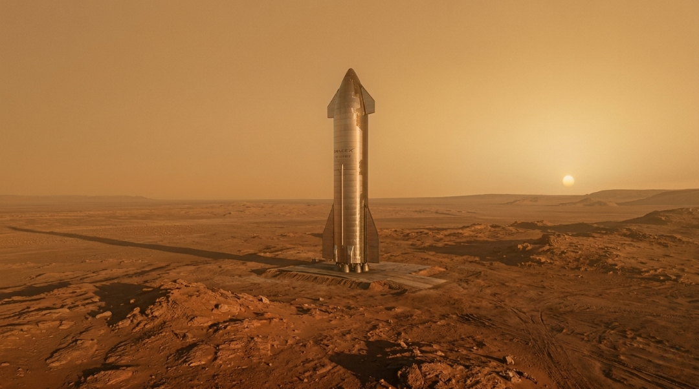
Перший форпост
Тепер це не просто корабель. SpaceX Starship стоїть під марсіаньским небом як дім для перших 6 мешканців.
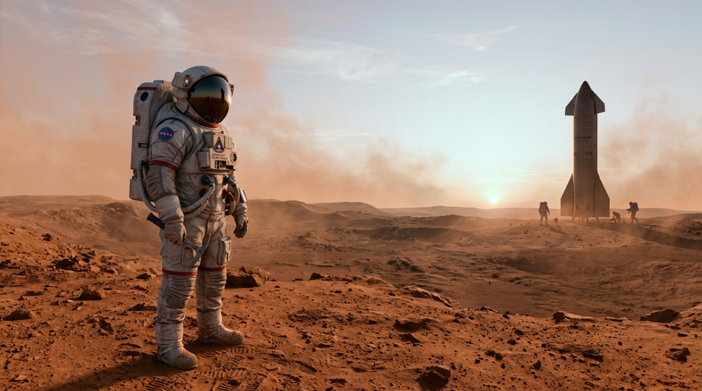
Перші космонавти
6 дослідників які стали на марсіанський грунт, офіціально стаючи найпершими мешканцями Марсу.
Місія "Альфа"
Одразу після приземлення почалася справжня праця. База "Альфа" не просто намет у пустелі, а сучасна мережа житлових модулів, сонячних полів та логістичних центрів. Поки Starship височіє в центри як величний шпиль, навколо нього розвивається перше людське місто на іншій планеті. Люди прибувають сюди не для виживання, а для того щоб залишитись назавжди.
Життя всередині це симфонія. Шум від очищувачів повітря, шепіт системи переробки води та зв'язок з Землею. Кожен кілограм перенесеного грунту та кожна розгорнута панель приближають нас до повної автономії. Це не лабораторія а живий організм колонії. Коли сонце сідає над горизонтом, вогні Альфи вмикаються, знаменуючи перемогу людського духу над космічною пусткою.
Галерея
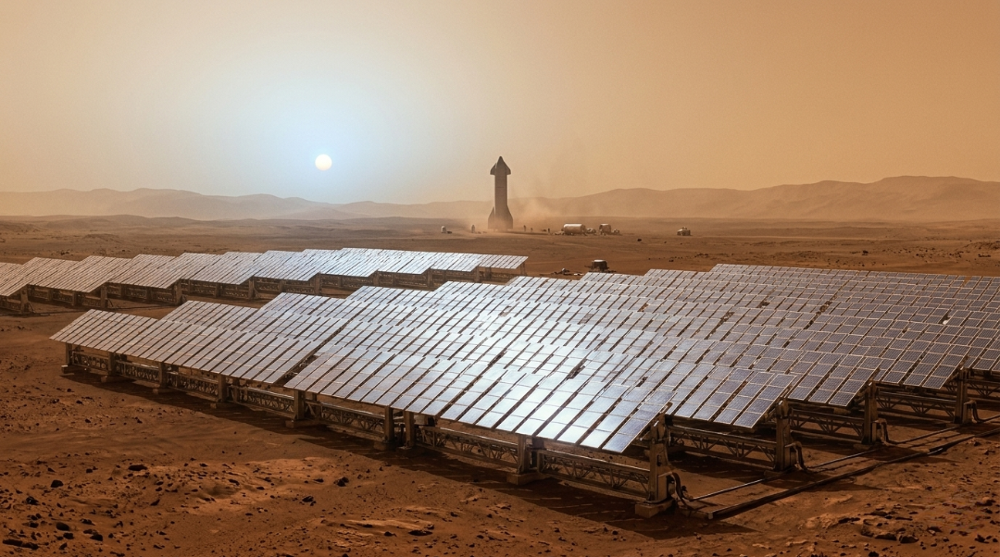
Живлення колонії
Кілометри сонячних ферми які вловлюють слабе марсіанське світло, щоб системи побуту працювали вночі.
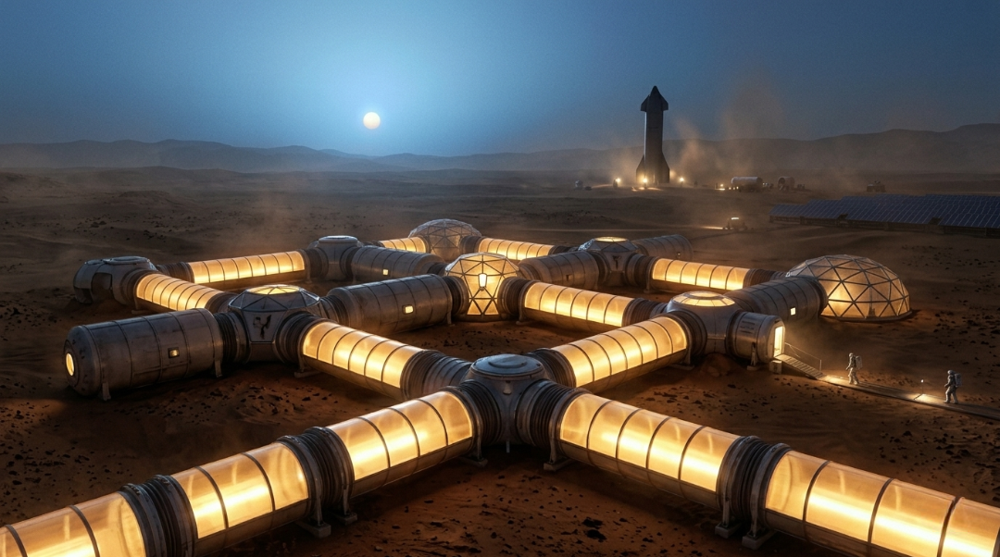
Герметичні модулі
Cучасні житлові модулі розроблені для захисту членів екіпажу від радіацій та морозних температур Марсу.
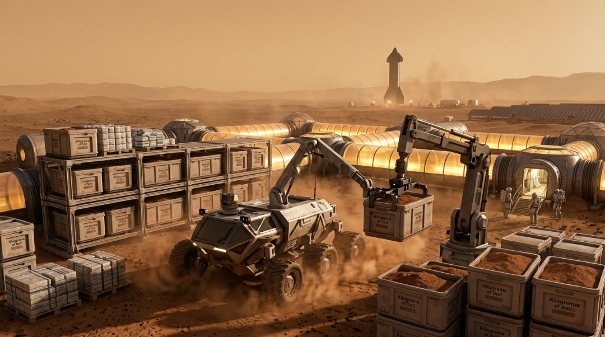
Автономія ресурсів
Автоматичні системи які добувають воду та мінерали з грунту для забезпечення незалежної від Землі колонії.
Походження
Саме тут почало битися серце колонії. Це той момент де Марс перестав бути цвинтарем та став садом. Екіпаж взяв токсичний й замерзлий грунт та змусив його дихати. Під великими скляними куполами було створено екосистему, де мохові стіни фільтрують кисень, а марсіанські ліси починають свою експансіюю
Це тонкий баланс, де кожна рослина є частиною системи життєзабезпечення. У секторі походження легко забути що за склом знаходиться світ який хоче тебе вбити. Аромат вологої землі та тепле повітря нагадують про Землю, але дерева що тягнуться до помаранчевого неба нагадують що ми архітектори нового світу.
Галерея
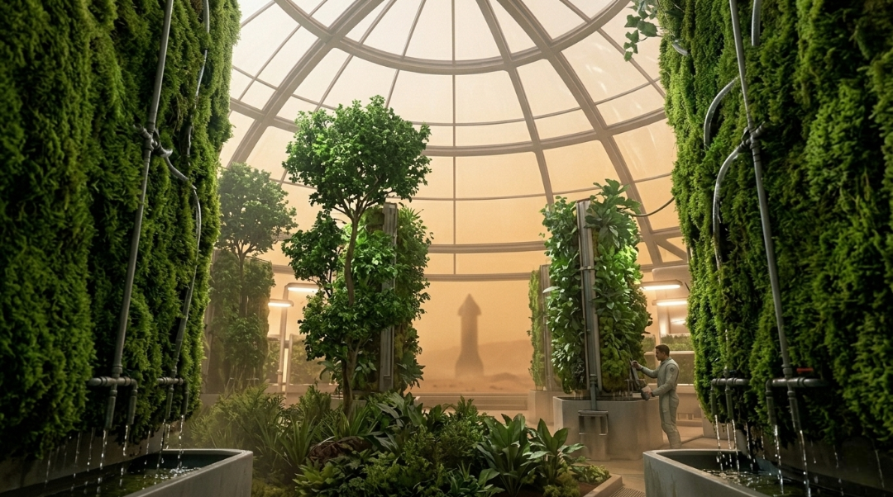
Атмосфера
Високотехнологічні стіни з моху і вертикальні сади які очищують повітря та створюють вологий затишок.
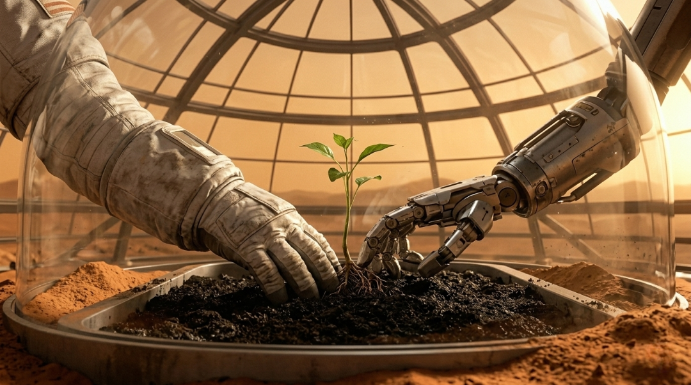
Співпраця
Справжнє народження життя на Марсі, де інтуіція людини та точність робота висаджують перші саженці.
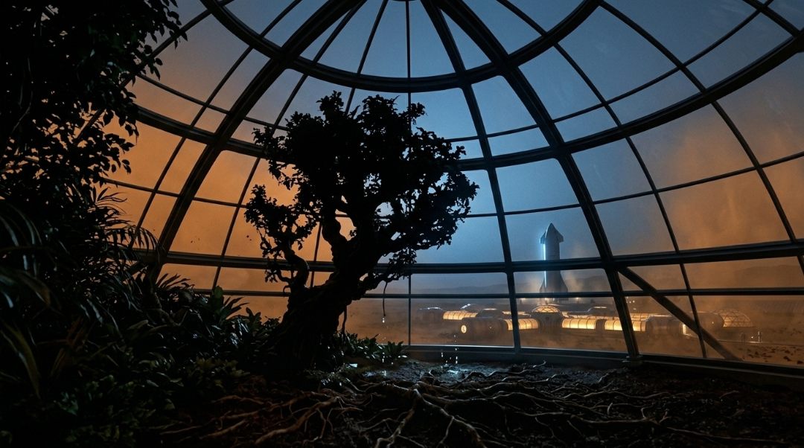
Архітектура
Силует марсіанського лісу в куполі що стоїть як пам'ятник інженерам які трансформували мертвий світ.
Експансія
Сьогодні колонія це не просто група модулів, а потужний промисловий та культурний хаб що простягається рівнинам Аркадії. Стрімкий ріст населення перетворив поселення на повноцінну державу. Інженери збудували мережу герметичних тунелів та доріг зі сплавленого реголіту, що дозволяє подорожувати містами без скафандрів.
Марс став незалежним. Тут працюють лікарні, торгові центри та космодроми які приймають хвилі переселенців. Важку техніку замінив транспорт на магнітній подушці. Там де колись була мрія виживання стало новим континентом людської цивилізації який дихає та розширяється до полюсів.
Галерея
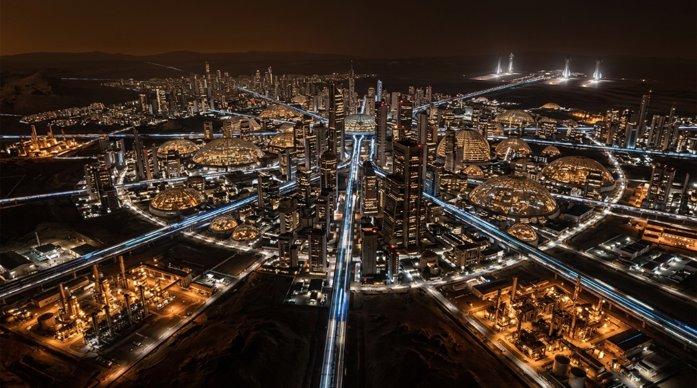
Мережа
Планетарна "сітка" доріг та герметичних тунелів, які з'єднують віддалені міста. Це як виглядає розвита колонія.
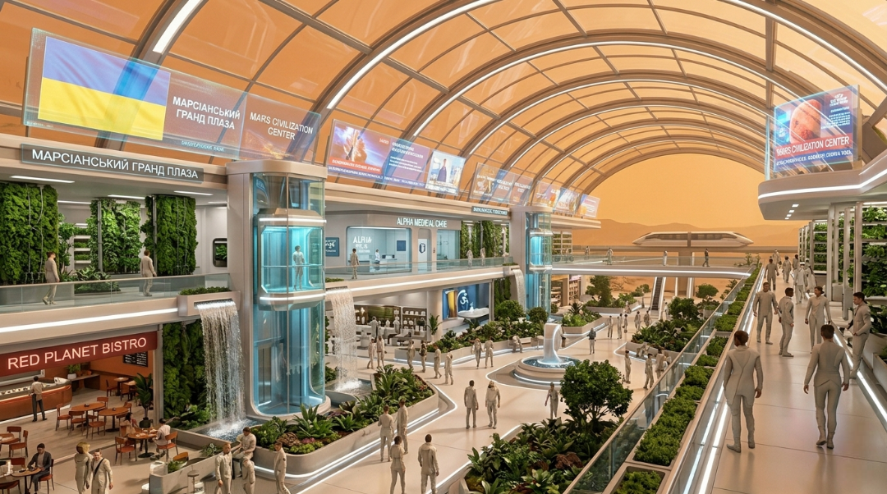
Цивилізація
Поява міського життя з сучасними лікарнями, магазинами, соціальними та академічними центрами.
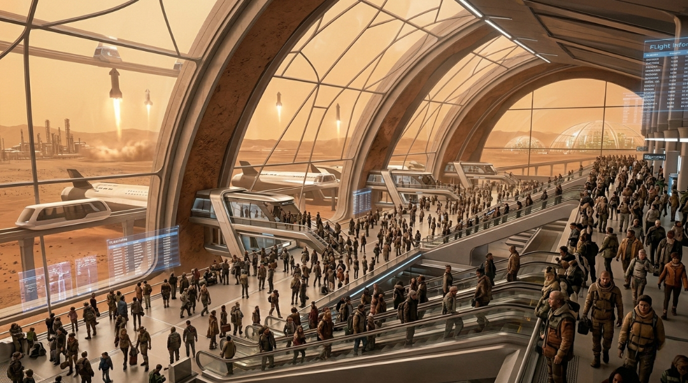
Ворота
Космодром для прибуття до Марсу, з'єднуєчи 2 світи через потік кораблів Starship та нових переселенців.
Життя на Марсі
І. Червоний ранок
Ранок на марсі починається з "блакитного світанку". Це відбувається через особливості розсіювання світла. В атмосфері сонце здається блідим та синім на рожевому небі. Мешканці каньонів Valles Marineris прокидаються в оселях висічених прямо в скелях для захисту від радіації. Шлях на роботу пролягає через зелені зони. Це квітучі коридори які з'єднують житлові куполи з робочими секторами. Люди п'ють каву переглядаючи новини із Землі які приходять з 20-хвилинною затримкою.
ІІ. Нова економія
Марсіанська економіка тримається на найціннішому: воді та енергії. Праця на Марсі це поєднання технологій та творчості. Поки роботи виконують важку роботу шахтарів, люди зосереджені на терраформуванні та дизайну великої інфраструктури. Студенти-розробники з усього світу мріють потрапити сюди щоб проектувати інтерактивні мережі які допоможуть міліонам марсіан орієнтуватися у новому світі.
ІІІ. Дозвілля у низькій гравітації
Соціальне життя адаптувалося до 38-відсоткової гравітації. Спорт перетворився на щось неймовірне. Футбол в аеро-куполах дозволяє гравцям стрибати втричі вище, виконуючи фантастичні трюки. Вечори проходять на площах де помаранчеве небо відбивається в теллих вітринах кафе. Мистецтво та музика процвітають. "Dust-Wave" став гімном першого покоління народженного на Марсі.
IV. Марсіанська ідентичність
Мешканці цих міст не просто колоністи. Вони Марсіани. У них є свої традиції, свята та унікальна архітектура скляних міст та каньйонів. Вони відчувають гордість дивлючись на небо. Для них слово "дім" це не місце куди повертаються, а планета яку вони допомогли збудувати.
Галерея
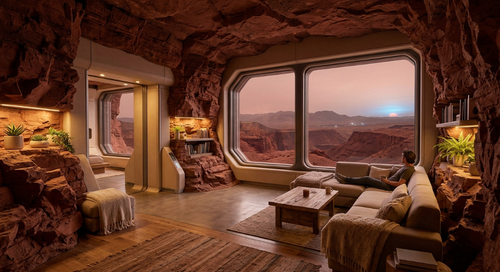
Оселі в скелях
Кімнати висічені в скелях. Скло та каркас захищають від радіації відкриваючи вид на марсіанський світанок.
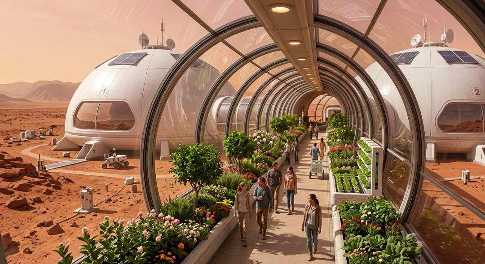
Зелені зони
Герметичні квітучі коридори з багатьох рослин. Вони з'єднують житлові куполи з робочими через пил Марсу.
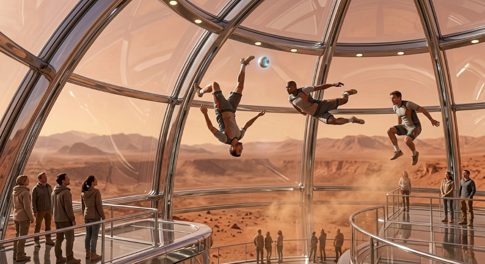
Аеро-футбол
Спорт у 38% гравітації. У куполах гравці стрибають втричі вище перетворюючи футбол на круте шоу.
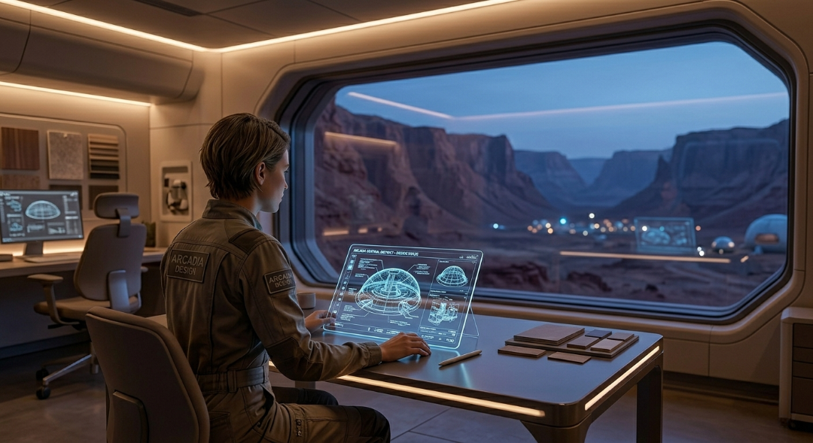
Дизайн на Марсі
Проектування мереж та скляних міст. Дизайнери створюють інфраструктуру для нових поколінь марсіан.
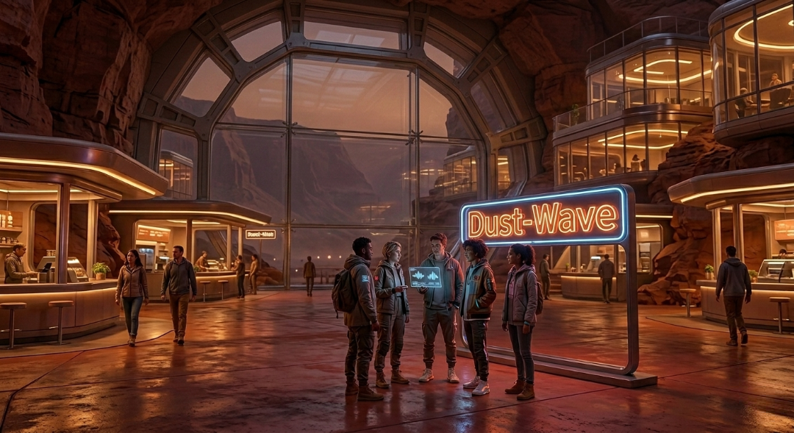
Dust-Wave
Вечір там де світло кав'ярень відбивається від арок каньйону. Місце народження унікальної культури.